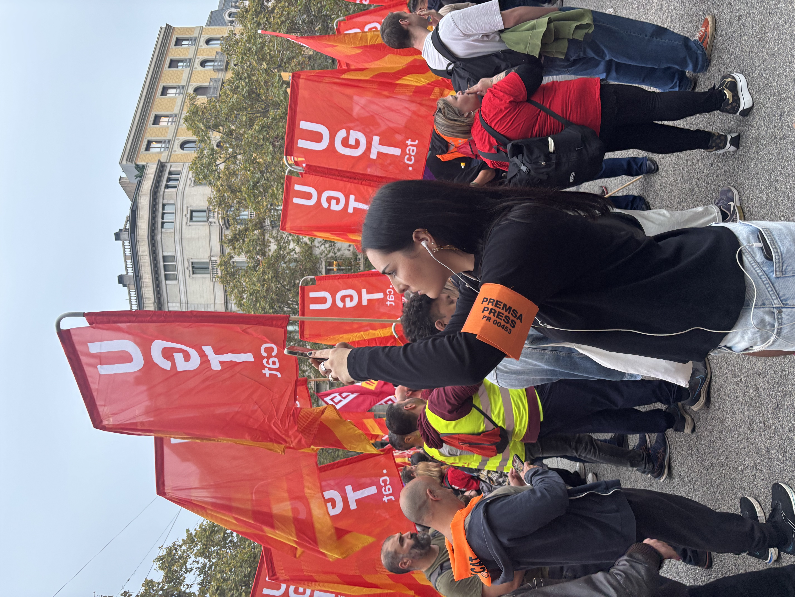

PORTFOLIO — 2026 / 2027
CERISE DE BECQUE
JOURNALISTE PLURIMÉDIA · BARCELONE - PARIS
Journaliste plurimédia, je m'intéresse particulièrement au reportage de terrain, à l'enquête et au traitement de l'actualité.
Ce portfolio rassemble une sélection de mes réalisations en vidéo, en presse écrite et sur le web.

SÉLECTION DE TRAVAUX
Productions
Reportages, vidéos, articles et podcast.
Aucune production dans cette catégorie pour le moment.
À PROPOS
Journalisme de terrain
et formats plurimédias.
Journaliste plurimédia, je m'intéresse particulièrement au reportage de terrain, à l'enquête et au traitement de l'actualité en vidéo. Ce portfolio rassemble une sélection de mes réalisations en vidéo, en presse écrite, web...
Consulter mon CVCONTACT